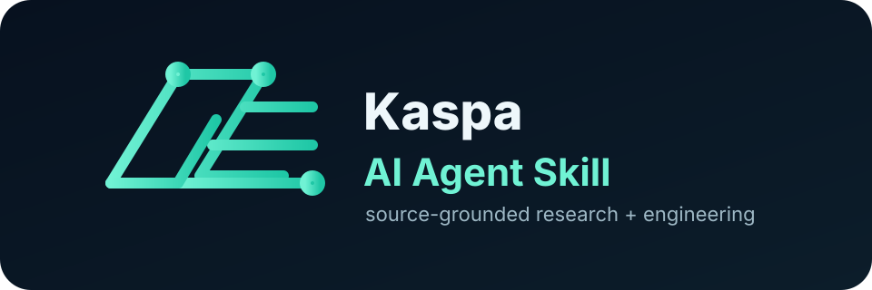

Stable Release ZIP
Best path for Codex and local agent installs.

Source-grounded Kaspa protocol and Toccata engineering for teams that need UTXO-first systems, explicit wallet boundaries, and reproducible verification.
The project ships as a reusable skill package. Download the ZIP, install it into your agent skill folder,
then invoke $kaspa-sovereign-architect-engine from Codex or use the bundled adapters elsewhere.
Best path for Codex and local agent installs.
Use this for scripts, package mirrors, and reproducible release workflows.
Use the same skill brain from Codex, OpenAI-style agents, Claude, Cursor, OpenClaw, Gemini CLI, or a generic LLM stack.
Dated snapshot from primary Kaspa sources. It tracks Rusty Kaspa release state, repository refs, docs/research fingerprints, KIPs, and mainnet/TN endpoint identity.
Checked 2026-06-18T17:20:45.790Z. Source health is healthy_with_warnings. Latest Rusty Kaspa release: v2.0.1, published 2026-06-15.
Warning preserved as unknown evidence: TN12 blockDAG endpoint unavailable. Endpoint failure is not treated as proof that a feature or network state is absent.
Use the skill name directly in your prompt:
Source-grounded reasoning for BlockDAG/GHOSTDAG, KIPs, UTXO and transaction lifecycle design, wallet boundaries, threat modeling, test strategy, and production deployment guidance.
Version 1.8 adds deterministic local sync, behavioral evaluations, transaction-plan safety, and live source intelligence for current release, KIP, and network-state claims.
Ready-made adapters are included under
skills/public/kaspa-sovereign-architect-engine/agents/ for rapid drop-in use across toolchains.
Launch copy, channel strategy, and campaign templates are now bundled:
This repository is package-first: the primary artifact is the reusable skill folder under
skills/public/kaspa-sovereign-architect-engine/, plus adapter files, references, release notes,
and validation scripts for cross-agent use.